File: a_000513.gt.txt (if the image is defective, simply delete all Arabic text and the line will be excluded)

والربع الثاني هو الذي من الجنوب والصبا. ولهم المثلثات: الثور والعذراء
File: a_000514.gt.txt (if the image is defective, simply delete all Arabic text and the line will be excluded)

والجدي. ووالي تدبيرهم: الزهرة وزحل مشرقين. وطبائع هذه الكواكب على نحو
File: a_000515.gt.txt (if the image is defective, simply delete all Arabic text and the line will be excluded)
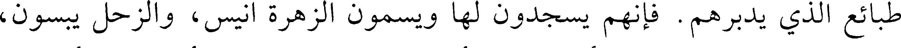
طبائع الذي يدبرهم. فإنهم يسجدون لها ويسمعون الزهرة أنيس، والزحل يبسون،
File: a_000516.gt.txt (if the image is defective, simply delete all Arabic text and the line will be excluded)
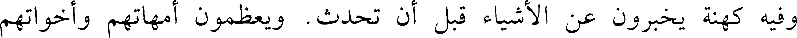
وفيه كهنة يخبرون عن الأشياء قبل أن تحدث. ويعظمون أمهاتهم وأخواتهم
File: a_000517.gt.txt (if the image is defective, simply delete all Arabic text and the line will be excluded)

وجميع الإناث لتدبير الزهرة وزحل إياهم. وفيهم الورع، لأن الزهرة طبيعتها
File: a_000518.gt.txt (if the image is defective, simply delete all Arabic text and the line will be excluded)

الورع. وبلادهم حارة ويحبون المجامعة والرقى والرقص واللهو والمجون من
File: a_000519.gt.txt (if the image is defective, simply delete all Arabic text and the line will be excluded)

أجل الزهرة أيضا. ولا يجامعون الذكران، وينكحون أمهاتهم ويولدونهم ويرون أن
File: a_000520.gt.txt (if the image is defective, simply delete all Arabic text and the line will be excluded)

ذلك تعظيم لهن. وأنفسهم عظيمة. وهم أشداء مقاتلون لتشريق زحل. ونصيب
File: a_000521.gt.txt (if the image is defective, simply delete all Arabic text and the line will be excluded)

هذا الربع من وسط الأرض: أروميا وقيلسوسينا وتوريا وحلبايا. وهذه البلدان من
File: a_000522.gt.txt (if the image is defective, simply delete all Arabic text and the line will be excluded)

الشمال والدبور. وهو الحمل والأسد والقوس. ووالي تدبيرهم المشتري والمريخ
File: a_000523.gt.txt (if the image is defective, simply delete all Arabic text and the line will be excluded)

والشمس وعطارد. ولذلك صاروا أهل تدبير وصناعة وتجارة وعقل وسخاء
File: a_000524.gt.txt (if the image is defective, simply delete all Arabic text and the line will be excluded)

وكتابة. وفيهم غش وخبث.
File: a_000525.gt.txt (if the image is defective, simply delete all Arabic text and the line will be excluded)

وأما الربع الثالث:
File: a_000526.gt.txt (if the image is defective, simply delete all Arabic text and the line will be excluded)
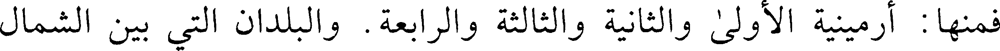
فمنها: أرمينية الأولى والثانية والثالثة والرابعة. والبلدان التي بين الشمال
File: a_000527.gt.txt (if the image is defective, simply delete all Arabic text and the line will be excluded)
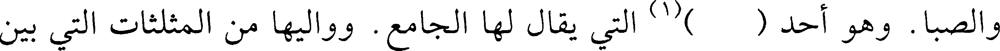
والصبا. وهو أحد ( ) (1) التي يقال لها الجامع. وواليها من المثلثات التي بين
File: a_000528.gt.txt (if the image is defective, simply delete all Arabic text and the line will be excluded)

432
File: a_000529.gt.txt (if the image is defective, simply delete all Arabic text and the line will be excluded)
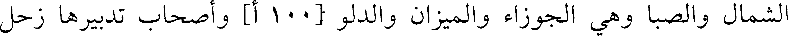
الشمال والصبا وهي الجوزاء والميزان والدلو [100 أ] وأصحاب تدبيرها زحل
File: a_000530.gt.txt (if the image is defective, simply delete all Arabic text and the line will be excluded)

والمشتري مشرقين، فلذلك صار الذين في هذه الكور يسجدون للشمس والمشتري
File: a_000531.gt.txt (if the image is defective, simply delete all Arabic text and the line will be excluded)

وهم يشبهون المجوس وعباداتهم وآدابهم حسنة. ولهم ملاحة وقبول. ماضين
File: a_000532.gt.txt (if the image is defective, simply delete all Arabic text and the line will be excluded)
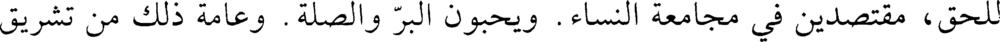
للحق، مقتصدين في مجامعة النساء. ويحبون البر والصلة. وعامة ذلك من تشريق
File: a_000533.gt.txt (if the image is defective, simply delete all Arabic text and the line will be excluded)

زحل والمشتري.
File: a_000534.gt.txt (if the image is defective, simply delete all Arabic text and the line will be excluded)

فأما الربع الرابع الذي بين الحوت والميزان واليه من المثلثات: السرطان
File: a_000535.gt.txt (if the image is defective, simply delete all Arabic text and the line will be excluded)
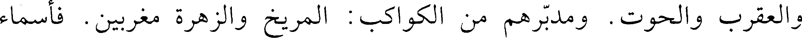
والعقرب والحوت. ومدبرهم من الكواكب: المريخ والزهرة مغربين. فأسماء
File: a_000536.gt.txt (if the image is defective, simply delete all Arabic text and the line will be excluded)

الأمم التي في هذا الربع: قونيه وميدنيه وأفريقيه ومورطلينا وطنجه ومراميه.
File: a_000537.gt.txt (if the image is defective, simply delete all Arabic text and the line will be excluded)
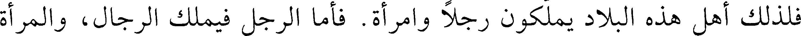
فلذلك أهل هذه البلاد يملكون رجلا وامرأة. فأما الرجل فيملك الرجال، والمرأة
File: a_000538.gt.txt (if the image is defective, simply delete all Arabic text and the line will be excluded)

تملك النساء. ويحبون مجامعة الإناث وعامة نكاحهم زنى. ويحبون الزينة
File: a_000539.gt.txt (if the image is defective, simply delete all Arabic text and the line will be excluded)

والمال، ويتزينون بزي النساء من أجل الزهرة. وهم أهل غش وسحر وجرأة [في
File: a_000540.gt.txt (if the image is defective, simply delete all Arabic text and the line will be excluded)

إلقاء] أنفسهم في المهلكة من أجل المريخ وولايته إياهم.
File: a_000541.gt.txt (if the image is defective, simply delete all Arabic text and the line will be excluded)
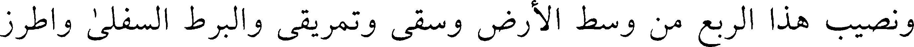
ونصيب هذا الربع من وسط الأرض وسقى وتمريقى والبرط السفلى واطرز
File: a_000542.gt.txt (if the image is defective, simply delete all Arabic text and the line will be excluded)

المغرب ومارثها والحبشة والاسطون وهم ما بين الشمال والصبا.
File: a_000543.gt.txt (if the image is defective, simply delete all Arabic text and the line will be excluded)

ولهم من المثلثات: التومين والميزان والدلو. ومدبرهم من الكواكب: زحل
File: a_000544.gt.txt (if the image is defective, simply delete all Arabic text and the line will be excluded)

والمشتري وعطارد. وهذه الكور قريبة من مدار الكواكب الخمسة الجارية إذا كانت
File: a_000545.gt.txt (if the image is defective, simply delete all Arabic text and the line will be excluded)

مغربة. ولذلك هم أهل تدين وتعظيم الآلهة. يعرفون حقها ويحبون النياحة. ولهم
File: a_000546.gt.txt (if the image is defective, simply delete all Arabic text and the line will be excluded)

آداب كبيرة مختلفة وأديان متفرقة. وإذا ملكوا كانوا أذلاء جبناء صابرين. وإذا
File: a_000547.gt.txt (if the image is defective, simply delete all Arabic text and the line will be excluded)

ملكوا كانوا أهل طيب أنفس وعطية كثيرة. وخلقهم على نحو طبيعة أرضهم.
File: a_000548.gt.txt (if the image is defective, simply delete all Arabic text and the line will be excluded)

وعامة ذكرانهم ضعفاء مؤنثون يتركون الجماع من حيث ينبغي ويأتون النساء من
File: a_000549.gt.txt (if the image is defective, simply delete all Arabic text and the line will be excluded)
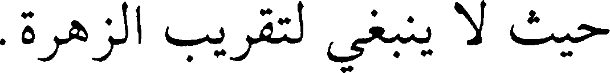
حيث لا ينبغي لتقريب الزهرة.
File: a_000550.gt.txt (if the image is defective, simply delete all Arabic text and the line will be excluded)

وذكروا أن الأرض والماء وسائر الطبائع كرية. وان استدارة الأرض كلها
File: a_000551.gt.txt (if the image is defective, simply delete all Arabic text and the line will be excluded)

وجبالها وبحارها أربعة وعشرون ألف ميل. وان قطرها وعمقها وعرضها سبعة
File: a_000552.gt.txt (if the image is defective, simply delete all Arabic text and the line will be excluded)
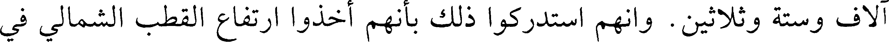
آلاف وستة وثلاثين. وانهم استدركوا ذلك بأنهم أخذوا ارتفاع القطب الشمالي في
File: a_000553.gt.txt (if the image is defective, simply delete all Arabic text and the line will be excluded)
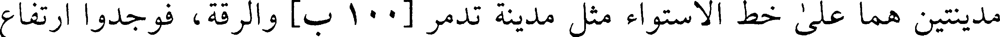
مدينتين هما على خط الاستواء مثل مدينة تدمر [100 ب] والرقة، فوجدوا ارتفاع
File: a_000554.gt.txt (if the image is defective, simply delete all Arabic text and the line will be excluded)
433
File: a_000555.gt.txt (if the image is defective, simply delete all Arabic text and the line will be excluded)

القطب في مدينة الرقة خمسة وثلاثين جزءا وثلثا. وارتفاع القطب في مدينة
File: a_000556.gt.txt (if the image is defective, simply delete all Arabic text and the line will be excluded)
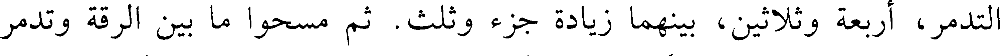
التدمر، أربعة وثلاثين، بينهما زيادة جزء وثلث. ثم مسحوا ما بين الرقة وتدمر
File: a_000557.gt.txt (if the image is defective, simply delete all Arabic text and the line will be excluded)

فوجدوه سبعة وعشرين ميلا. فعلموا أن لكل جزء وثلث، جزء من أجزاء الفلك
File: a_000558.gt.txt (if the image is defective, simply delete all Arabic text and the line will be excluded)

الأعظم. فالظاهر من الفلك سبعة وستون (1) ميلا من الأرض، والفلك ثلاثمائة
File: a_000559.gt.txt (if the image is defective, simply delete all Arabic text and the line will be excluded)

وستون جزءا على ما اتفق عليه علماء الروم والهند وبابل. وإنما قسموه هكذا،
File: a_000560.gt.txt (if the image is defective, simply delete all Arabic text and the line will be excluded)

لأنهم وجدوا الفلك قد اقتسمته البروج الاثنا عشر، ووجدوا الشمس تقطع كل برج
File: a_000561.gt.txt (if the image is defective, simply delete all Arabic text and the line will be excluded)

منها في شهر وتقطع البروج في ثلاثمائة وستين يوما. فبهذه القسمة والمقاييس
File: a_000562.gt.txt (if the image is defective, simply delete all Arabic text and the line will be excluded)

استدركوا علم الساعات والكسوفين. وبها استخرجوا الآلات والاصطرلابات